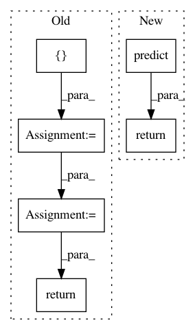

4065c4b2cc1ebe2eeb829e8ff3f620a4f510b096,nn_wtf/neural_network_graph.py,NeuralNetworkGraph,predict,#NeuralNetworkGraph#Any#Any#,123
Before Change
self.prediction_op = tf.argmax(self.layers[-1], 1)
image_data = image.reshape(self.input_size)
feed_dict = {self.input_placeholder: [image_data]}
best = session.run(self.prediction_op, feed_dict)
return best[0]
def _add_layer(self, layer_name, in_units_size, out_units_size, input_layer, function=lambda x: x):
with tf.name_scope(layer_name):
After Change
def predict(self, session, image):
if self.predictor is None:
self.predictor = Predictor(self)
return self.predictor.predict(session, image)
def _add_layer(self, layer_name, in_units_size, out_units_size, input_layer, function=lambda x: x):
with tf.name_scope(layer_name):
weights = self._initialize_weights(in_units_size, out_units_size)
In pattern: SUPERPATTERN
Frequency: 3
Non-data size: 6
Instances
Project Name: lene/nn-wtf
Commit Name: 4065c4b2cc1ebe2eeb829e8ff3f620a4f510b096
Time: 2016-02-26
Author: lene.preuss@gmail.com
File Name: nn_wtf/neural_network_graph.py
Class Name: NeuralNetworkGraph
Method Name: predict
Project Name: keras-team/autokeras
Commit Name: a0efd9b22aae8cf6340977a36ec798a00ae86804
Time: 2018-12-03
Author: jhfjhfj1@gmail.com
File Name: autokeras/supervised.py
Class Name: DeepSupervised
Method Name: predict
Project Name: keras-team/autokeras
Commit Name: 5619b6770675a7fedd85cbc5ab19773a3ba94e13
Time: 2019-03-30
Author: immortalness@gmail.com
File Name: autokeras/net_module.py
Class Name: NetworkModule
Method Name: predict